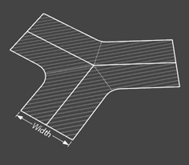
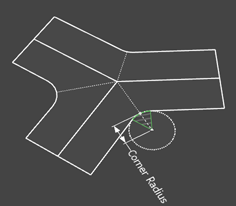
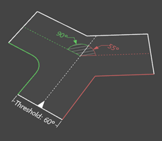
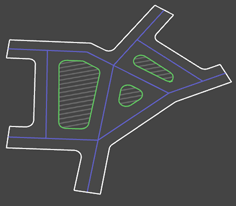

   
Default Street Dimension
Width:
Corner Rounding
Corner Radius:
Angle Threshold:
°
When the corner angle is above this threshold it will be rounded.
Post Processing
Create Blocks:
Creates a group with faces of the blocks between the streets.